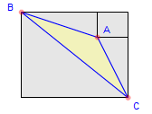

Area of a Triangle - box method (Coordinate Geometry)
The area of a triangle can be found by subtracting the area of simpler shapes from its bounding box.
Try this
Drag any point A,B,C. The area of the triangle ABC is continuously recalculated using the box method.
You can also drag the origin point at (0,0).
This method works by first drawing the
bounding box of the triangle. This is the smallest rectangle that can contain the triangle.
It must have
vertical
and
horizontal sides.
This leaves easy shapes (right triangles
and rectangles) around it whose area can be easily calculated.
These areas are then subtracted from the area of the bounding box to give the desired result.
In the figure above, (click 'reset' if necessary), we are trying to find the area of the yellow triangle ABC.
The triangle's bounding box is the large gray rectangle surrounding the triangle.
You can see that there are three
right triangles
formed around the yellow one.
By subtracting their areas from the area of the bounding box, we are left with the area of the yellow triangle.
These gray triangles are easy to calculate because they are orthogonal - they have two sides that are vertical or horizontal
and so their area can be found by the usual
'half base time height' method.
When one vertex is inside the box

In the figure above, click 'reset' and then drag point A to the left until it is inside the box. You should get a shape like the one above.
Now we have an extra rectangle in the corner.
We simply subtract the
area of this rectangle
along with the three triangles from the bounding box in the usual way.
Step by step
-
Draw the bounding box. This is the smallest orthogonal rectangle that will enclose the triangle.
(An orthogonal rectangle is one where all four sides are either vertical or horizontal.) Calculate the area of this box.
-
Calculate the area of the three
right triangles
formed between the triangle and the box (shown in gray above).
This is easy since they are all orthogonal (one side vertical or horizontal). The simple
'half base time height' method method is used.
-
If one of the vertices is inside the box, calculate the
area of the small rectangle that forms in the corner.
-
Subtract the area of the three triangles, and possibly the extra rectangle, from the area of the bounding box,
thus giving the area of the triangle.
Example
In the diagram above, click on "reset".
-
Draw the bounding box - a rectangle with vertical and horizontal sides. In this particular case:
- The left side is determined by the x coordinate of point B (10)
- The right side is determined by the x coordinate of point A (55)
- The top side is determined by the y coordinate of point B (35)
- The lower side is determined by the y coordinate of point C (5)
The area of this box is its width times its height: 45×30 = 1350 square units.
-
Calculate the area of the three gray right triangles using "half base times height". Taking the upper triangle,
we choose the horizontal line from B to be the base. Subtracting its X coordinates the base length is 45.
Its height is the vertical distance from A up to the corner, so subtracting its y coordinates gives 10. Its area is thus
half of 45×10 = 225. Using similar methods we find the area of all three triangles which are 225, 100, and 525 square units.
-
Subtracting the area of these three triangles from the area of the bounding box we get
1350-225-525-100 = 500 square units, the desired area of the triangle ABC.
If one vertex was inside the box, we must also subtract the area of the resulting extra rectangle from the box.
By Formula
You can also calculate the area by formula. See Area of a triangle, formula method.
Other shapes
The box method also works with irregular quadrilaterals. The general approach also works with any polygon, although
you need to get a little creative sometimes to find the collection of simple orthogonal shapes to surround it.
Things to try
-
In the diagram at the top of the page, Drag the points A, B or C around and notice how the area calculation
uses the areas of the simple surrounding shapes.
Try points that are negative in x and y. You can drag the origin point to move the axes.
-
Click "hide details". Drag the triangle to some random new shape. Calculate its area using the box method and then click
"show details" to check your result.
-
After the above, estimate the area by counting the grid squares inside the triangle. (Each square is 5 by 5 so
has an area of 25).
Once you have done the above, you can click on "print" and it will print the diagram exactly as you set it.
Limitations
In the interest of clarity in the applet above, the coordinates are rounded off to integers and the lengths rounded to one decimal place.
This can cause calculatioons to be slightly off.
For more see
Teaching Notes
Other Coordinate Geometry topics
(C) 2011 Copyright Math Open Reference.
All rights reserved